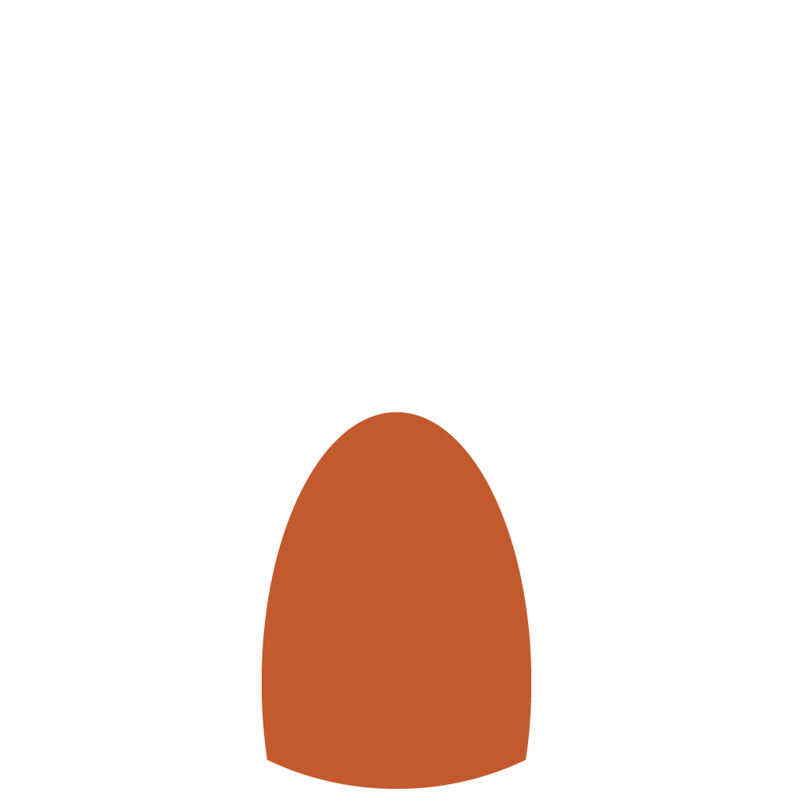
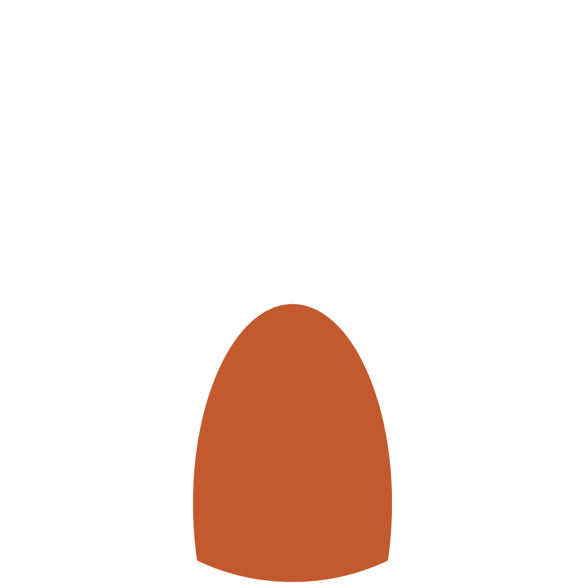
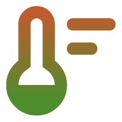

 ×{{ rmnData[0].apple }}
×{{ rmnData[0].packet }}
×{{ rmnData[0].apple }}
×{{ rmnData[0].packet }}
- 観測した人
- {{ rmnData[0].apple }}人
- 観測した電波
- {{ rmnData[0].packet }}シグナル
{{ rmnData[0].cpuTemp }}℃
{{ rmnData[0].battery }}%
- CPU温度
- {{ rmnData[0].cpuTemp }}℃
- バッテリー残量
- {{ rmnData[0].battery }}%
睡眠中...
森見守者（もりみまもりもん）とは
IoTデバイス「りもん」は、森の様子を見守ります。 森を訪れる人やデバイスを見つけることが得意です。
「りもん」は、太陽の光で動きます。 なので、夜や雨の日は寝てしまいます。